玻璃建筑区 · 相同视角前后比较

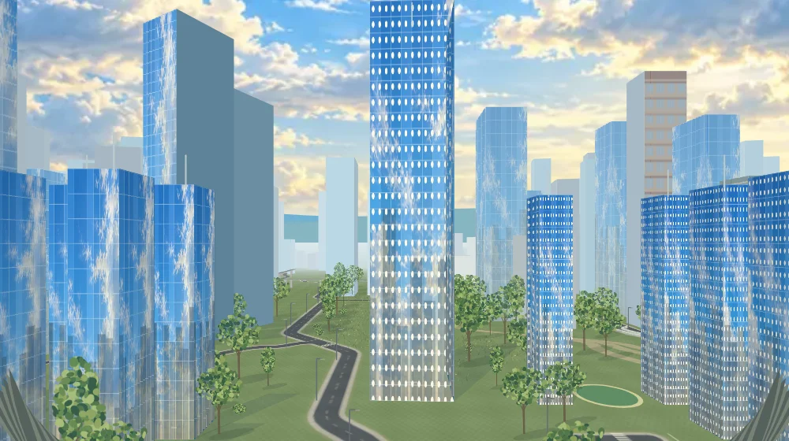
进入游戏 · 完整验证报告 · 浏览器测试数据 · 性能数据
五个区域预告使用实际场景截图。首次安全练习可跳过；结束动画后回答两道不同主题的问题，再进入原有总结。保留现有控制与资源数值。
截图和测试来自本地 Chromium；手机尺寸为模拟，未使用实体手机。完整旅程使用测试驾驶程序。公开试玩域名被当前环境代理拒绝，未完成线上试玩核验。

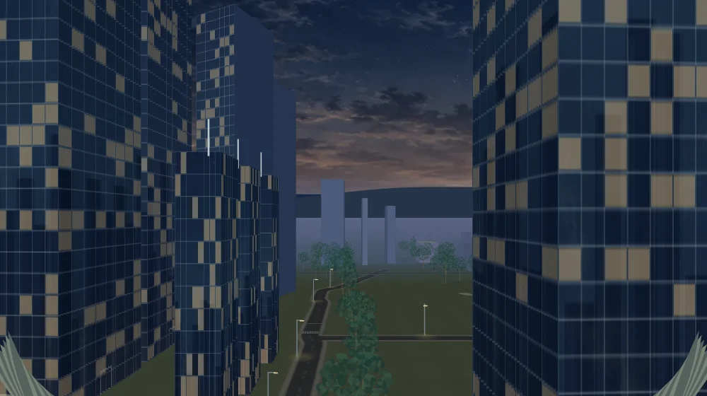
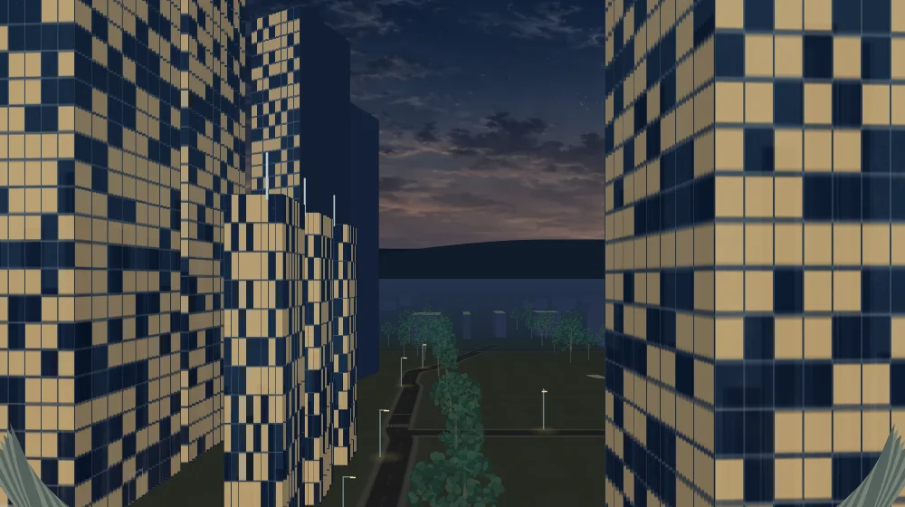
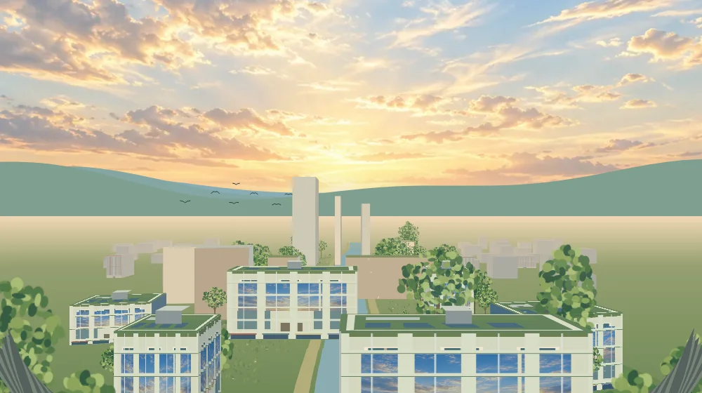
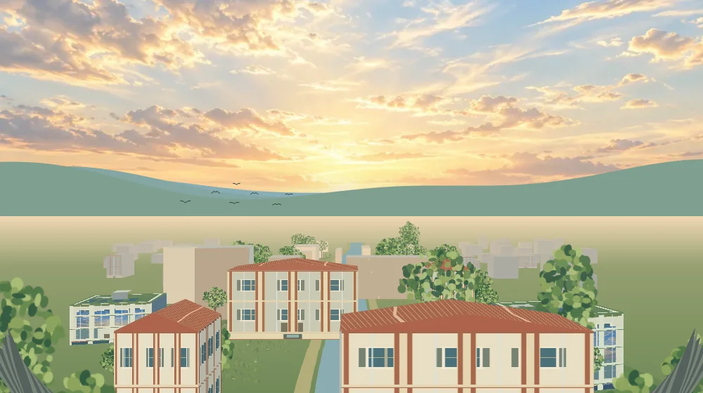
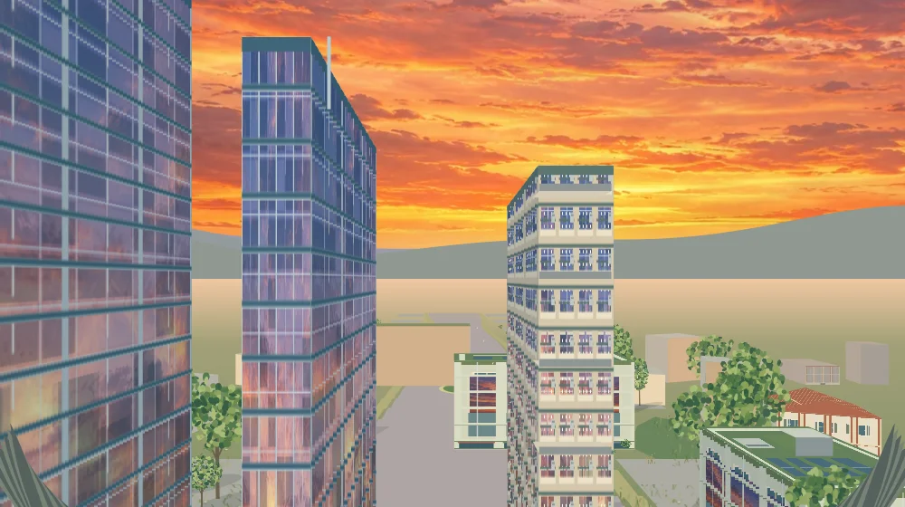
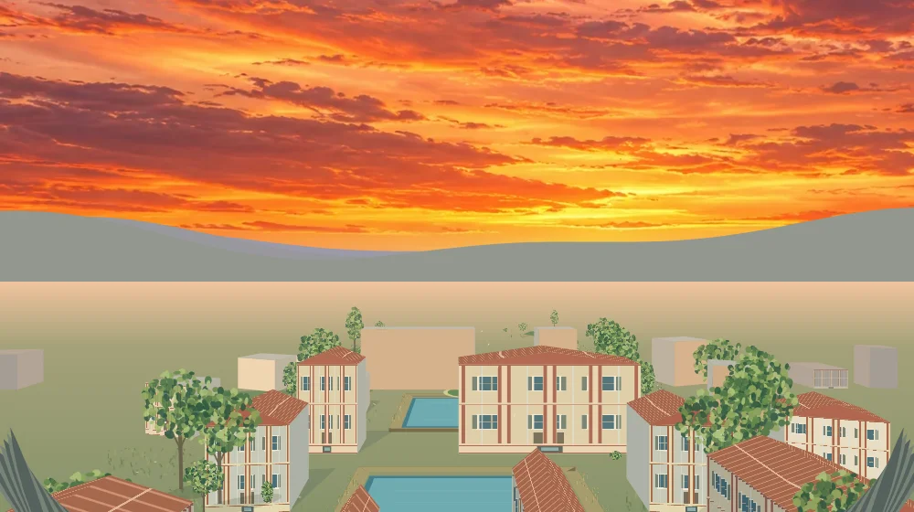
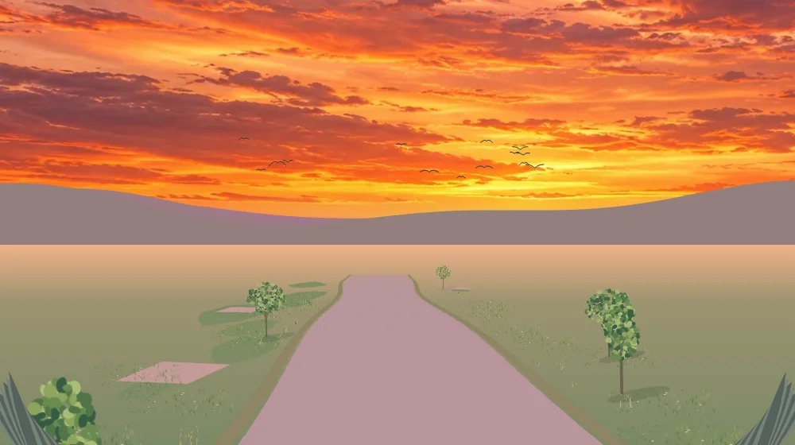
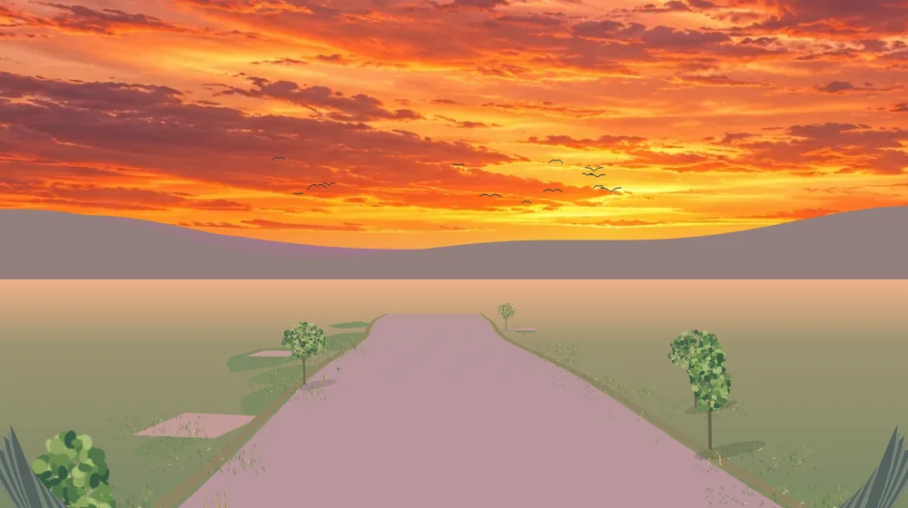
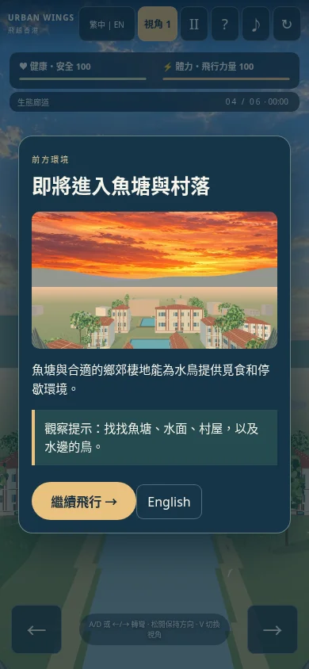
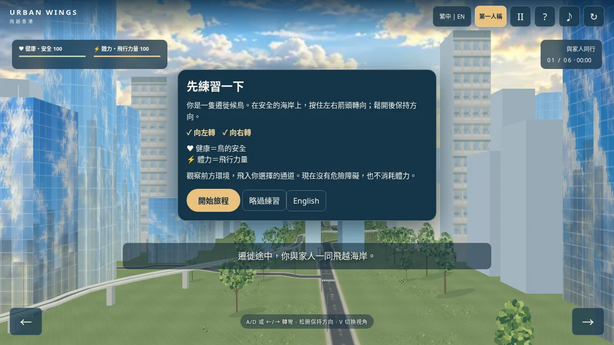
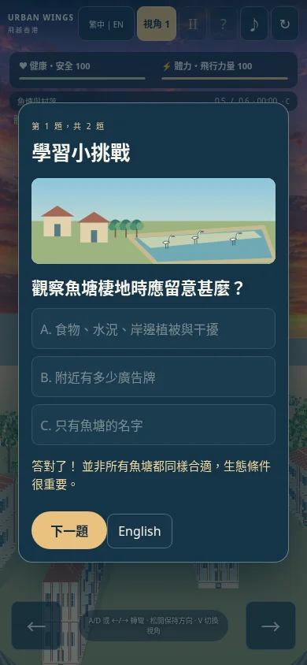
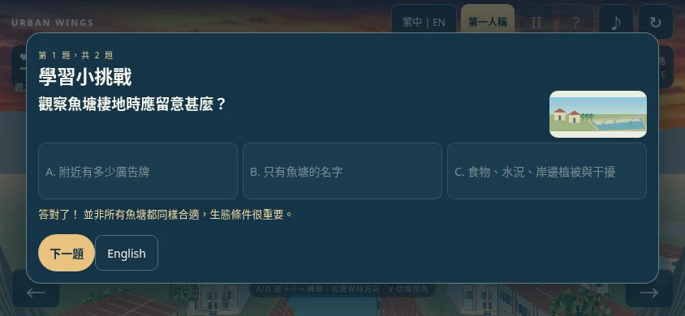
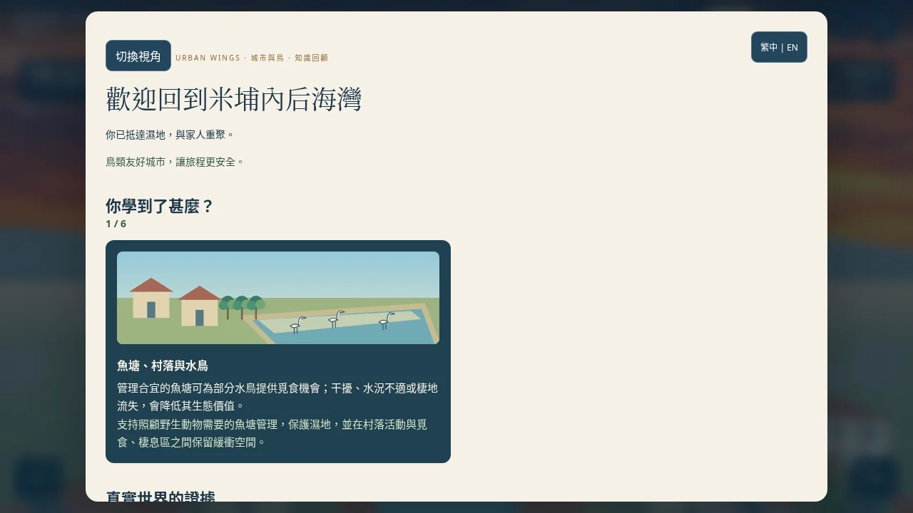